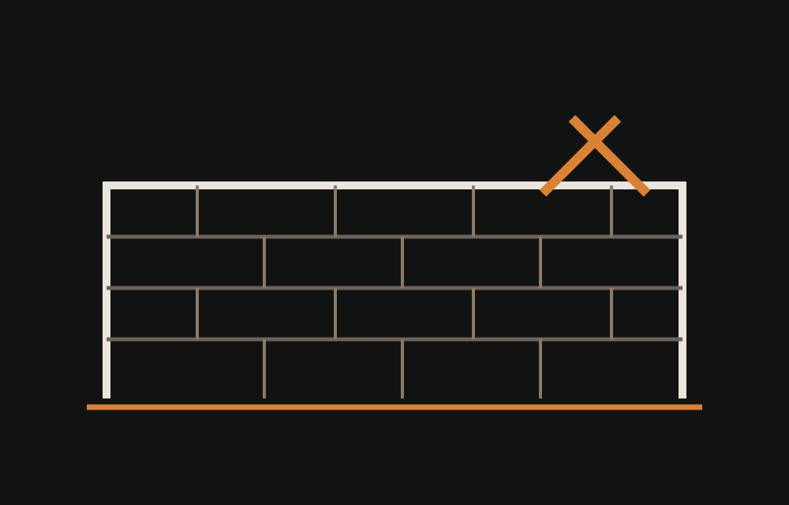

Murets & murs
Création ou reprise d’ouvrages maçonnés selon le besoin.
Petite maçonnerie, ouvrages extérieurs, murs et reprises avec une attention particulière portée au support et aux niveaux.

ORIS BAT PRO / MAÇONNERIEChaque chantier est confirmé après échange sur l’accès, le support existant, la commune et les contraintes techniques.
Création ou reprise d’ouvrages maçonnés selon le besoin.
Réalisation d’éléments de maçonnerie liés aux extérieurs ou à la rénovation.
Correction ou adaptation locale d’un ouvrage existant après diagnostic visuel.
Ouvrages liés aux passages, portails ou transitions extérieures.
Mise en état du support avant l’étape suivante du chantier.
Lien avec le terrassement lorsque la préparation du sol est nécessaire.
ORIS BAT PRO privilégie une organisation simple : comprendre l’existant, anticiper l’accès et le matériel, puis réaliser le chantier par étapes lisibles.
Oui, elle fait partie du positionnement de l’entreprise.
Oui, quand les deux lots sont liés, cela peut simplifier l’organisation du chantier.
Oui, selon l’état du support et la nature de la reprise demandée.
Une demande structurée permet de mieux qualifier votre besoin dès le premier échange.